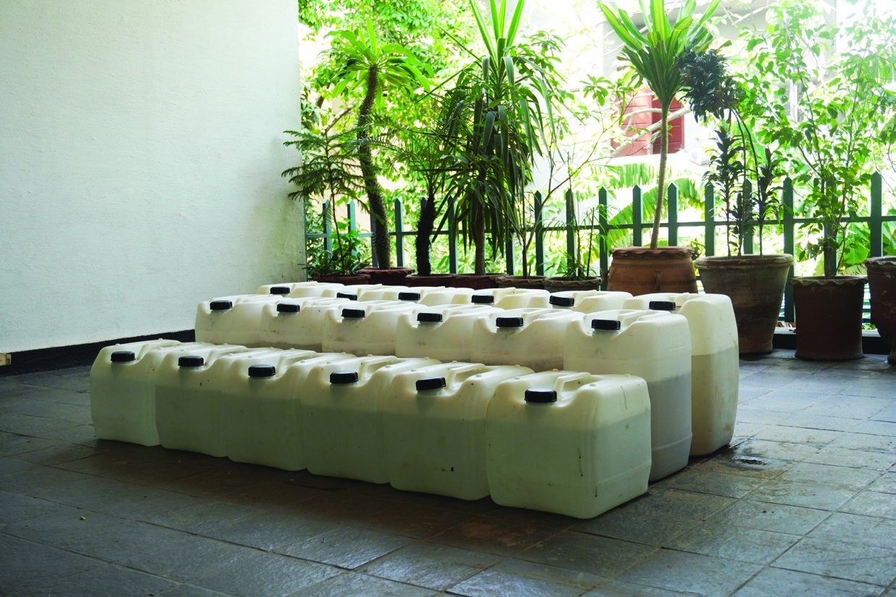
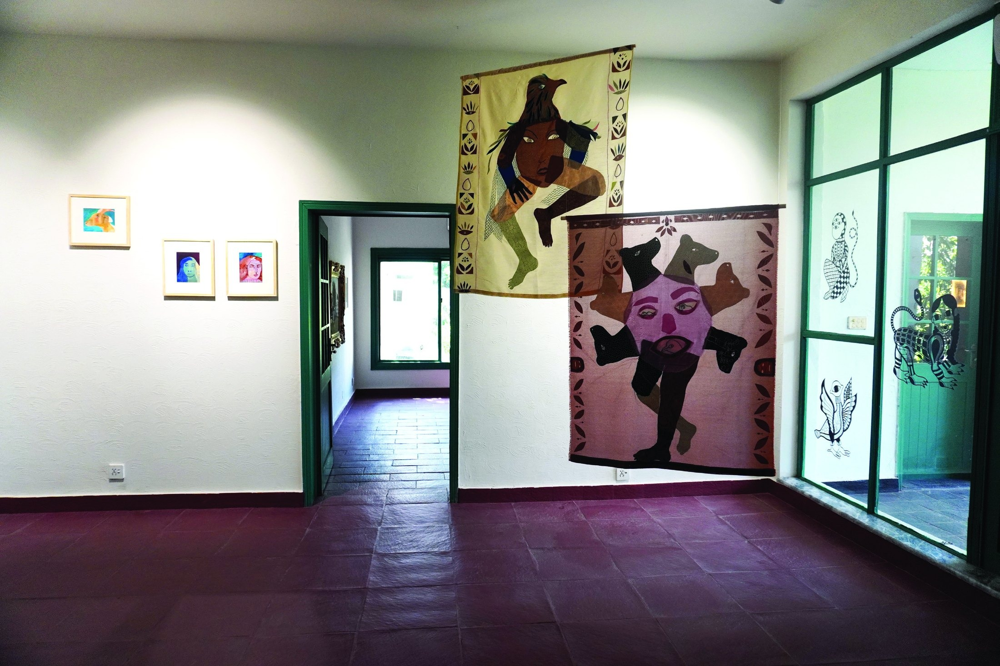
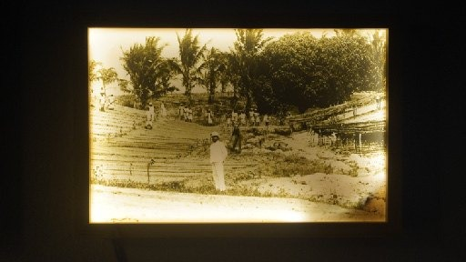
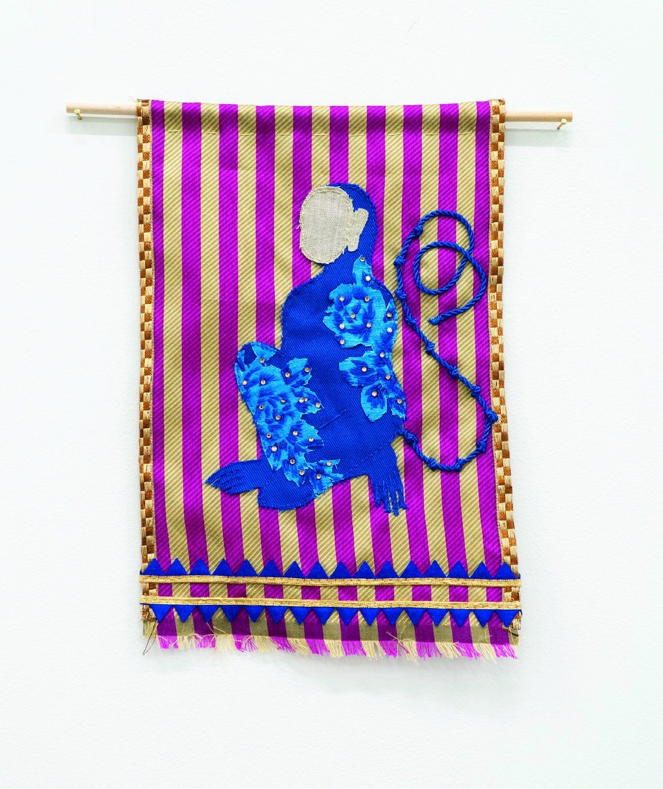
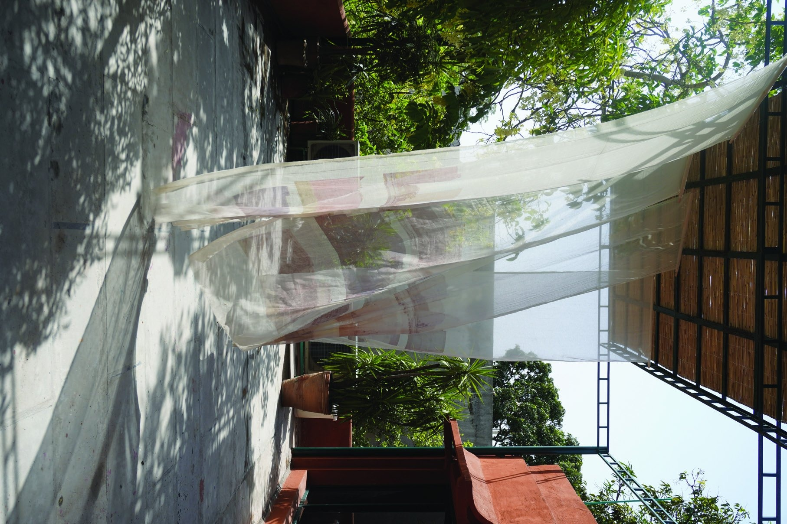
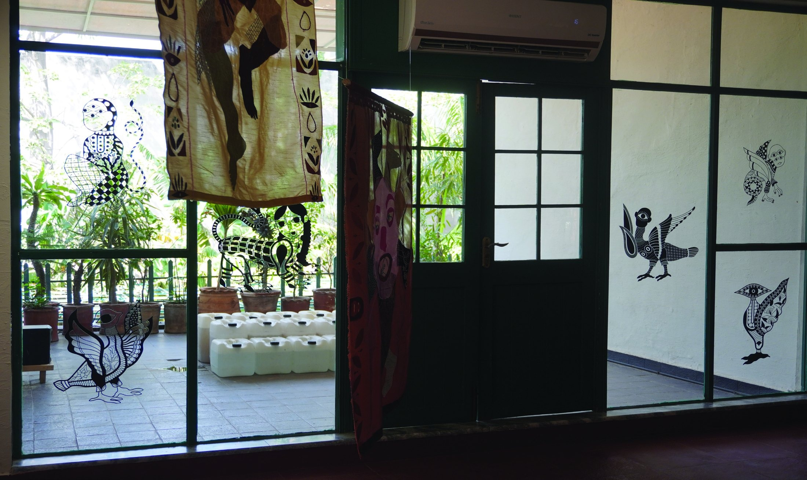
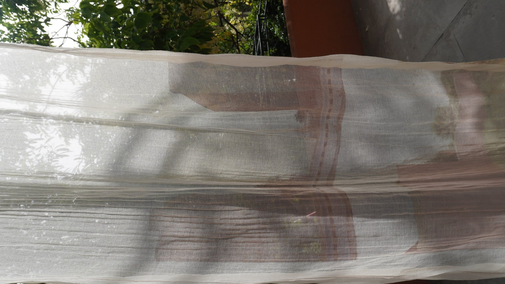
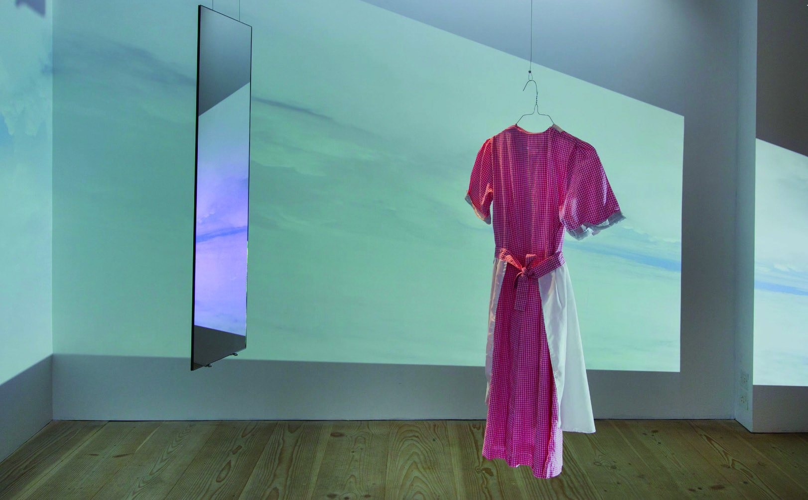

Art Exhibition · an[other]space Olomopolo
Fugitive Bodies,
Speculative Borderlands
A quiet but powerful exhibition on memory, movement, archives, migration, identity and the politics of belonging.
Art Exhibition · an[other]space Olomopolo
A quiet but powerful exhibition on memory, movement, archives, migration, identity and the politics of belonging.
Exhibition Feature
There are exhibitions that ask you to look, and then there are exhibitions that ask you to stay with what you have seen. Fugitive Bodies, Speculative Borderlands belongs to the second kind.
Curated by Abdullah Qureshi and presented by an[other]space Olomopolo, the exhibition brings together works by Tamara Al-Mashouk, Sara Khan, Syowia Kyambi, Sandeep Johal and Risham Hosain Syed.
At first glance, the show appears gentle in its visual rhythm. There is space, silence, fabric, water, archival imagery, soft gestures and familiar fragments of place. But the longer one engages with the works, the more the exhibition opens into questions that are urgent, layered and deeply political.
“What does it mean to belong to a place that has shifted? What does the body remember when history forgets?”
The exhibition does not treat the border as a simple line. It approaches the borderland as a lived condition — a place of rupture, but also of imagination; a place of loss, but also of survival.
Curatorial Conversation
The exhibition builds on decolonial, feminist and transnational concerns. It reflects on the histories and movements of racialized and migratory subjects while questioning how identity, territory and belonging are often fixed by systems of power.
What makes the exhibition compelling is that it does not reduce these subjects to pain alone. Instead, it allows space for refusal, tenderness, myth-making, recovery and possibility.
Through drawing, painting, photography, textiles, video, installation, archival research and fieldwork, the artists create a shared language of resistance and re-imagination.
About the Space
an[other]space Olomopolo is a visual arts initiative dedicated to building a community through exhibitions, research and experimental artistic practices. Its programme explores contemporary visual culture with a particular focus on decolonial thought, feminist practices and critical dialogue.
The project is led by Abdullah Qureshi, assisted by Samina K. Ansari, in collaboration with the Olomopolo team. While working closely together, an[other]space Olomopolo operates as an independent visual arts initiative.
Olomopolo, meanwhile, is a community cultural centre dedicated to participatory performing arts, film and media, creating an interdisciplinary environment where artistic practices can intersect and grow.
Featured Artists

Tamara Al-Mashouk’s work brings the exhibition into the territory of memory, land, water and longing. Her practice explores where memory lives — inside the body, within the land, or in the spaces we build around ourselves.
Her work reflects on water, soil, memory and the emotional architecture of home.

Sara Khan’s work enters the exhibition through magical realism, hybridity and transformation. Working across watercolor, textiles, ceramics and installation, she explores migration, heritage, the feminine experience, motherhood and survival.
Her works explore migration, femininity, hybridity and the changing forms we take in order to survive.

Syowia Kyambi’s work brings the archive under pressure. Her practice questions who gets remembered, who is erased and how colonial histories continue to shape the present.
Her work disrupts colonial archives, turning memory into an active site of questioning and resistance.

Sandeep Johal’s textile works bring bold visual energy into the exhibition. Through thread, pattern, symbol and colour, her Guardian series creates forms that feel protective, spiritual and alive.
Her textile works create a language of protection, presence and feminist resistance.

Risham Hosain Syed’s work brings the exhibition back to Lahore in a direct and powerful way. Her practice looks closely at the city as a place constantly in transition, familiar but unsettled.
Her work reflects on Lahore as a city in transition, shaped by memory, construction, power and historical residue.
Exhibition Views

Installation view from Fugitive Bodies, Speculative Borderlands.

Space, silence, fabric, archival imagery and soft gestures form the atmosphere of the exhibition.

The exhibition asks viewers to stay with what they have seen.
Cosmo Reflection
What stayed with us after experiencing Fugitive Bodies, Speculative Borderlands was not just the imagery, but the quiet insistence of its ideas.
This is an exhibition that reminds us that not everything needs to be resolved to be understood. Sometimes, to sit with uncertainty is itself a form of knowledge.
There is also a sense of care running through the show — care in how histories are approached, how bodies are represented and how stories are held.
“Borders are not only drawn on maps. They are carried within us — in language, relationships and memory.”
Why It Matters
The exhibition is significant because it opens a conversation around identity without reducing it to something decorative or simplified. It uses beauty, material, image and space to engage with difficult histories with sensitivity and depth.
Most importantly, it presents the borderland not only as a site of rupture and violence, but also as a space of imagination, connection and transformative possibility.